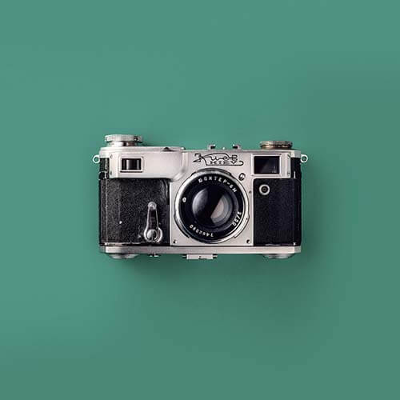

Photography is Art
The history of photography is a testament to human creativity and innovation. It has undergone remarkable transformations that have change our perception and documentation of the world around us. By capturing moments frozen in time, photography remains an invaluable medium that preserves memories, communicates stories, and inspires countless generations to come. On this page you will discover a summary of the key milestones in the history of photography, highlighting its transformative impact on society and visual culture.